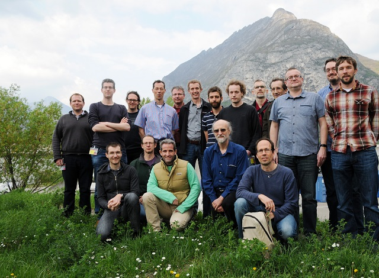

From time to time SasView meetings, and workshops will be held. There is also an annual code camp.
The next code camp will be held in September 2018.

Participants at Code Camp VI
Meetings and Workshops
- October 2017: SasView Code Camp VII
was held at the ESS DMSC, Copenhagen, Denmark, Octber 23 - 29, 2017
- April 2017: SasView Code Camp VI
was held at the ILL and ESRF, Grenoble, France, April 4 - 11, 2017
- October 2016: SasView Code Camp V
was held at the SNS at Oak Ridge National Lab, Oak Ridge TN, USA, October 4 - 11, 2016
- March 2016: SasView Code Camp IV
was held at the RID, TU Delft, Netherlands, March 15 - 22, 2016
- February 2015: SasView Code Camp III
was held at ESS DMSC, Copenhagen, Denmark, February 11 - 20, 2015.
- April 2014: SasView Code Camp II
was held at ISIS/Diamond, Didcot, UK, March 31 - April 6, 2014.
- April 2013: The first SasView Developers Workshop/Code Camp
was held at NIST, Gaithersburg, USA, April 2-7, 2013